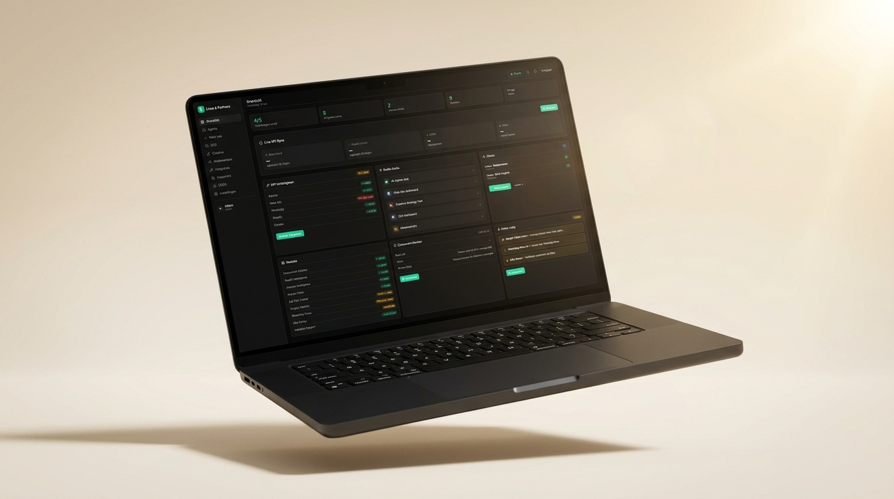
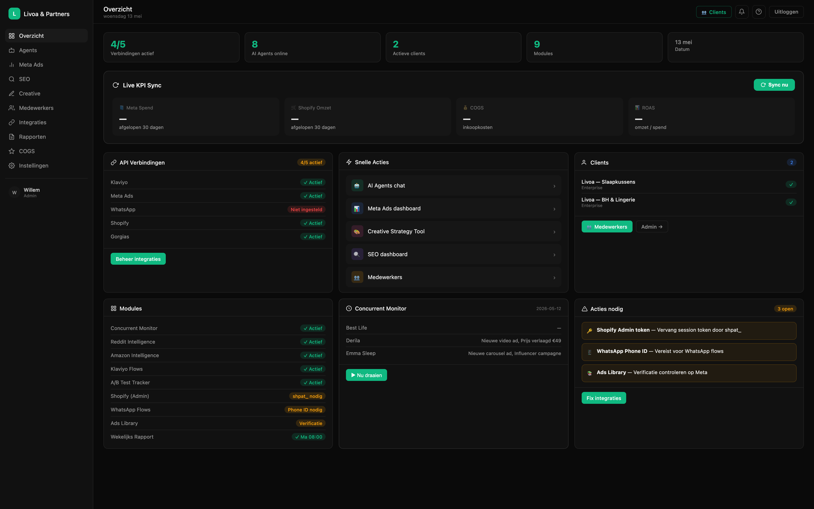
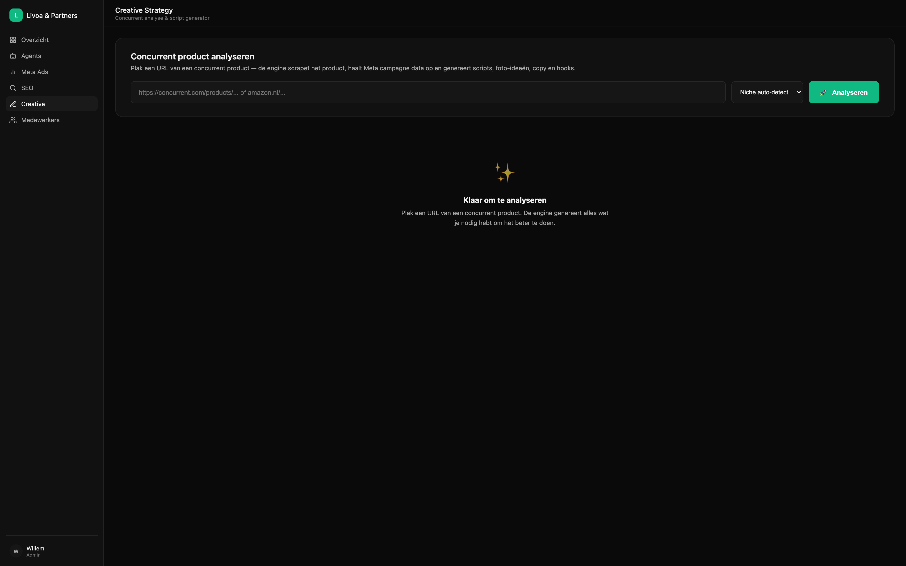
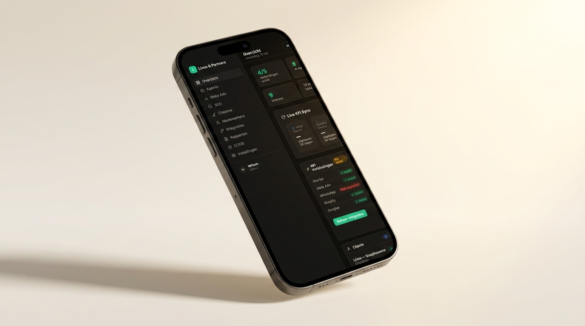
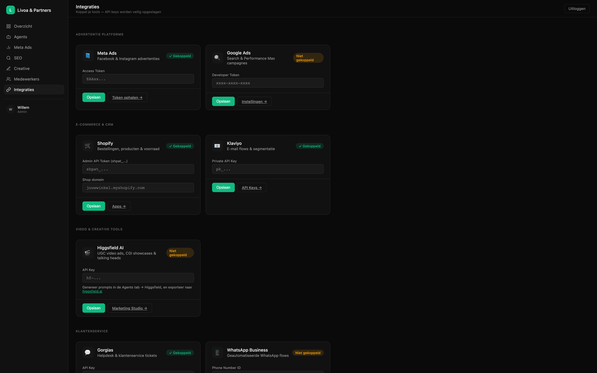

Eén plek voor je hele ecom-business.
Geen marketingdashboard, maar een echt ecom-besturingssysteem. Sales, ads, klantenservice, voorraad, content, research — alles wat een e-commerce founder of operator dagelijks aanraakt, in één scherm.

Sales, spend en marges — elke ochtend om 08:00 binnen.
Bij login zie je hoe je ecom-business er écht voor staat. Live KPI's uit Meta Ads, Shopify, COGS en ROAS. Daarnaast direct campagne-beheer via de Meta Ads MCP — pauzeer ads, verhoog budget, vraag een audit op, zonder Ads Manager te openen.

Acht specialisten voor je hele ecom-stack.
Marketing, Creative, SEO, Analytics, Research, Service, CRM en Automatie — getraind op jouw merk en doelgroep. Schrijf ad-copy in 3 varianten, vraag een creatieve brief uit een concurrent-URL, draai een win-back flow in Klaviyo, of laat de Service agent een Gorgias-ticket beantwoorden in NL of DE.

Vóór je koffie weet je wat je rivalen vandaag deden.
De Research-engine scant elke dag de Meta Ads Library, Pinterest en TikTok voor jouw niche. Het Creative Strategy Tool plakt een concurrent URL erin en krijgt een complete brief. De SEO-engine pakt Search Console, PageSpeed en CrUX onder één tab — inclusief automatische Core Web Vitals checks en content gaps.

In je broekzak, gekoppeld aan je hele toolstack.
KPI's, alerts en quick acties draaien op telefoon zonder aparte app. Klaviyo, Meta, Shopify, Gorgias en WhatsApp zijn out-of-the-box live. Eén login, één meter, één plek waar je ziet of een API down is.

Wat dit voor je business doet.
Geen marketing-praatjes, gewoon meetbare verschillen tussen 7 losse tools en één Ecom Dashboard met agents eronder.

Zo werkt het in het echt.
Een korte film van een ecom-operator die met het dashboard werkt — van koffie naar concrete actie in 90 seconden.